MidiPilot Settings and Providers
Everything you set up once and then stop thinking about: the provider and model connection, the prompts MidiPilot sends with each request, the settings it remembers per file, and the counters and logs that show what a request actually cost.
AI Settings
Configure your AI connection from Settings → MidiPilot AI. Select a provider, enter your API key, choose a model, and customize behavior.
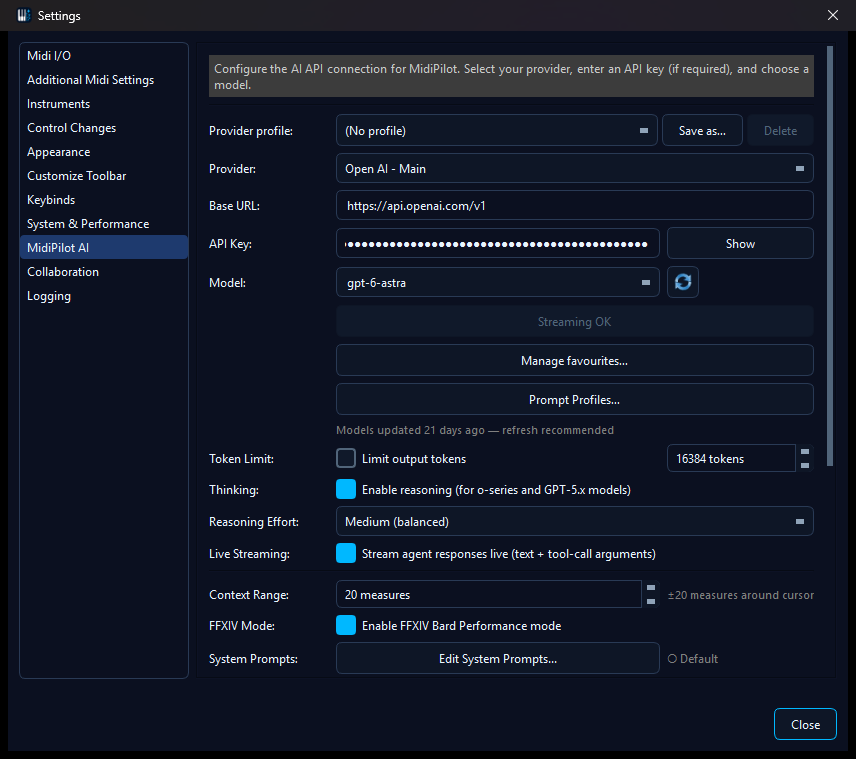
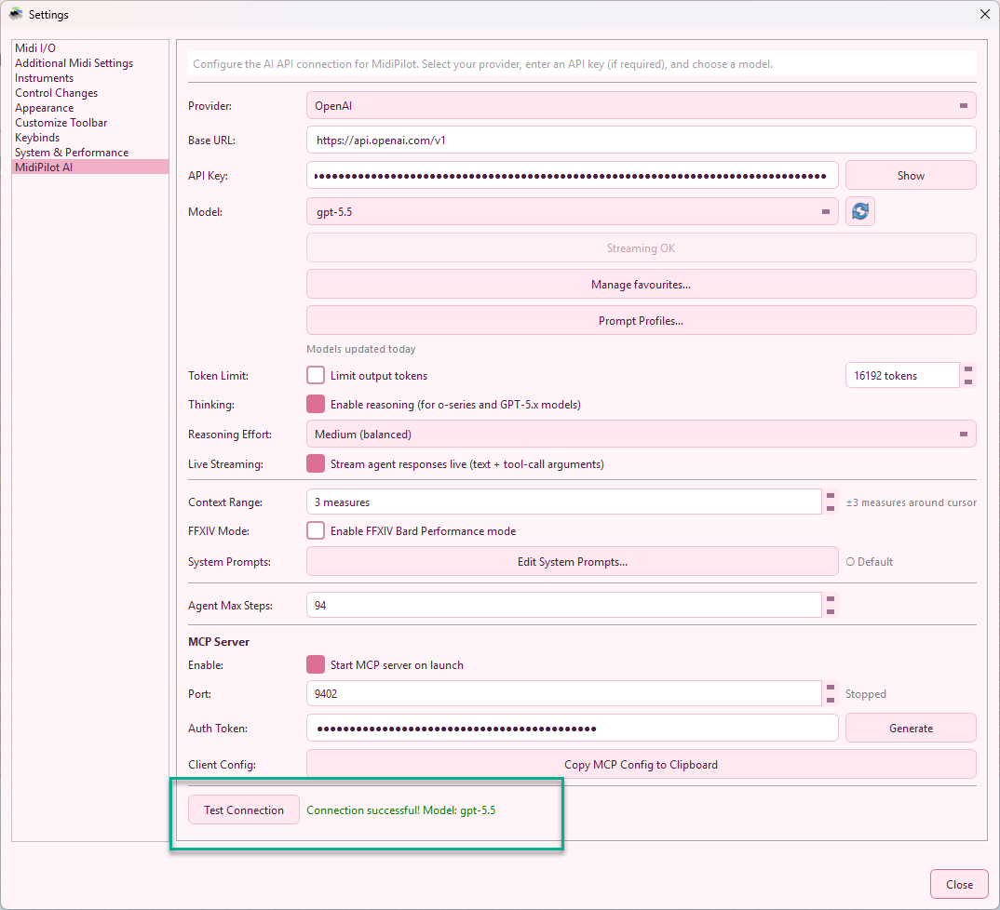
| Setting | Description |
|---|---|
| Provider profile | Fills provider, base URL, API key and model from a saved endpoint. Save as… stores the current four fields under a name - it is also how a profile is edited, since it offers the name of the profile on screen. Delete removes the selected profile and is available only while one is selected. |
| Provider | OpenAI, OpenRouter, Google Gemini, Ollama (local), or Custom - and below a separator, every saved provider profile as its own entry, whichever provider it was saved with. Custom is the unsaved, ad-hoc endpoint: picking it loads the custom base URL you last worked with (empty if there is none) rather than keeping the previous entry's URL and key. |
| Base URL | Filled in for you by the provider entry. Ollama (local) and Custom keep it editable so you can point at another host, port or OpenAI-compatible server. |
| API Key | Your provider API key - get one from OpenAI, OpenRouter, or Google Gemini. Not needed for Ollama (local), and not needed for a Custom base URL that points at this machine: the field then says so instead of showing the sk-… hint, and the connection counts as configured with the key left empty. |
| Model | Editable dropdown populated from the active provider's cached model list. If no cache exists, MidiPilot falls back to a small built-in starter list. |
| Refresh Models | Fetches the live provider model list from /models, normalizes provider-specific fields, filters obvious non-chat models, and stores the result in <userdata>/midipilot_models.json. |
| Manage favourites… | Pick the models that should stay visible per provider, and per custom provider profile. If no favourites are selected, all cached chat-capable models are shown. |
| Streaming OK / Force Streaming | The button below the model row. It reads Streaming OK and stays greyed out while nothing is blocked; once the selected provider/model has failed live streaming during this app session it becomes clickable and names the blocked path - Force Streaming (Simple Mode blocked), (Agent Mode blocked) or (Simple + Agent blocked). Clicking it clears the mark so the next request tries live streaming again. |
| Token Limit | Optional cap on output tokens to control costs |
| Thinking | Enable reasoning for o-series, GPT-5.x and GPT-6 models. These models take no temperature; with tools (Agent Mode) their requests go through OpenAI's Responses API automatically. |
| Reasoning Effort | None / Low / Medium / High / Extra High / Max. Max is accepted by GPT-6 (Astra); every other model is sent Extra High instead. GPT-6 has no None level - it runs at Low when None is selected. |
| Live Streaming | Streams both Simple and Agent responses live (text, reasoning summaries, and tool-call arguments) when the provider supports it. Failed paths automatically fall back to non-streaming for the rest of the session. |
| Prompt Profiles… | Open the Prompt Profiles dialog to attach custom system prompts to specific provider/model combinations. |
| Context Range | Measures before/after cursor sent as musical context (0-50) |
| FFXIV Mode | Enable Bard Performance rule enforcement |
| Agent Max Steps | Maximum tool calls per Agent request (5-100) |
| Test Connection | Verify your API key and model work correctly |
Model Refresh & Favorites
MidiEditor AI can fetch provider model lists directly instead of relying on a fixed dropdown. The refresh button is available both in Settings → MidiPilot AI and in the MidiPilot footer, so you can update models without leaving the chat panel. Refreshed models are cached for seven days and used for context-window estimates.
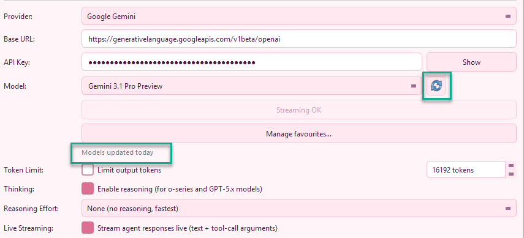
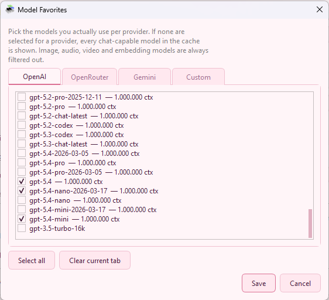
When the footer refresh completes, MidiPilot reports the result in the chat/status area so you know whether the cache was updated or the provider rejected the request.
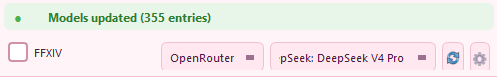
If a model fails live streaming but still works without streaming, MidiPilot retries automatically and marks that model with a warning icon for the current app session. The mark is scoped per mode - Simple Mode (no tools) and Agent Mode (with tools) are tracked independently, because some models support live streaming in only one of the two paths. The dropdown shows which mode is blocked: ⚠ <model> (Simple), (Agent), or (Simple+Agent). Use the Force Streaming button to clear the temporary mark after switching providers, updating the model, or testing a fixed endpoint.
Capability-aware error handling - if the active provider returns HTTP 404 with “No endpoints found that support tool use” (or any equivalent “tools not supported” error), MidiPilot stops retrying immediately, posts a clear “Model does not support tool calling - pick a different model in Settings → AI, or switch to Simple mode for this request” bubble, and remembers the flag per provider:model. Picking a different model re-enables Agent Mode straight away. The flag is remembered between sessions and clears itself again in three ways: it expires a week after it was set, an Agent request that does come back with tool calls clears it at once, and Retry tool support for this model in the ⚙ gear menu of the MidiPilot footer clears it on the spot for the model currently selected.
Supported Providers
| Provider | Base URL | API Key | Free Tier |
|---|---|---|---|
| OpenAI | api.openai.com/v1 | Get API Key → | Limited |
| OpenRouter | openrouter.ai/api/v1 | Get API Key → | Free models available |
| Google Gemini | generativelanguage.googleapis.com/v1beta/openai | Get API Key → | 15 RPM, 1M TPM |
| Ollama (local) | localhost:11434/v1 | None - runs on your PC | Free & unlimited |
| Hugging Face (via Custom) | router.huggingface.co/v1 | HF token (Inference permission) | Free monthly credits |
| Custom | User-specified | User-specified - none when the URL points at this machine | Varies |
The base URLs above are what the provider entries fill in for you. Ollama (local) and Custom leave the field open for editing, so a local server on another host or port and any OpenAI-compatible endpoint can be typed in. Each provider remembers its own API key, so switching back and forth between two cloud providers does not make you paste a key again.
Provider profiles (saved endpoints)
A provider profile is a named connection: provider, base URL, API key and model stored together under a name you choose. Picking a profile sets all four at once, so several endpoints can live side by side - a Hugging Face router token and a local OpenAI-compatible server, for example, both of which use the Custom provider and would otherwise share a single set of fields.

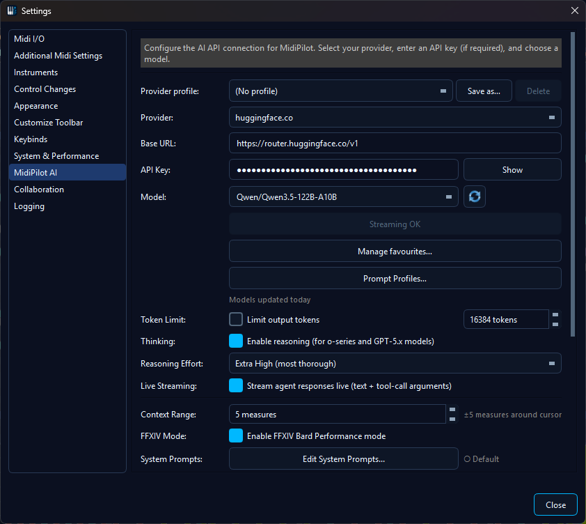
The Provider profile row sits above the connection fields; Save as... captures what the fields show. The row honestly reads (No profile) here because the chosen model differs from the saved one, while the provider entry still names the endpoint.
| Where | What it does |
|---|---|
| Settings → MidiPilot AI | The Provider profile row directly above the connection fields. It starts at (No profile) and lists every saved profile, whichever provider it was saved with. Selecting one fills the fields below; they are stored when you confirm the settings dialog. Save as… writes the current provider, base URL, API key and model to a profile. It pre-fills the name of the profile currently on screen, so keeping that name updates it - you are asked to confirm the update first - and typing a new name saves a copy; if the profile you started from still describes the same endpoint, you are then offered to delete it, which turns the copy into a rename. Delete removes the selected one and leaves the fields as they are. |
| MidiPilot footer | The Provider dropdown is the footer's single connection picker: built-in providers first, then a separator, then every saved profile, whichever provider it was saved with. Picking one switches the whole connection in one step and reports the applied profile in the status line - and if that endpoint still needs a key, it says that instead. Save connection as provider profile… in the ⚙ gear menu stores the connection MidiPilot is using right now under a name, without opening the settings dialog, and selects the new entry in the dropdown. |
| Per-file preset | A per-file AI preset also records the name of the active profile - never a URL or a key. Opening that file on a machine that has a profile of the same name reconnects to the right endpoint and MidiPilot says which profile it applied; where that name is unknown it says so too and uses the preset's own provider and model instead. |
Saved profiles appear in the Provider dropdown itself, listed below a separator after the built-in providers, so switching to a saved endpoint is the same gesture as switching provider. Both the footer and the settings page list every saved profile there, whichever provider it was saved with, and picking one has exactly the same effect as picking it in the Provider profile row.
In the footer the plain Custom entry - the unsaved, ad-hoc endpoint - is listed when there is one to pick: when a custom base URL is configured, and whenever the connection in use is a custom endpoint you have not selected a profile for - including one a saved profile happens to describe, because picking a profile is what puts that profile on screen. Whatever MidiPilot is talking to is always on the list. The settings page always offers Custom, because that is where a custom endpoint is entered in the first place. Picking it there loads the ad-hoc endpoint itself: the last custom base URL you worked with outside any profile, together with the API key remembered for custom endpoints - a server on your own machine authenticates by being yours, so its key field stays empty - and that endpoint's model list. It does not keep the URL and key of the entry you came from. When there is no such endpoint the entry starts completely blank - no URL, no key and no models - because a key and a model list belong to a particular server. Type the base URL of the endpoint you want, then its key and model.

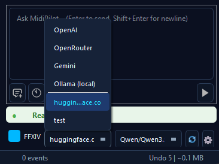
One picker for everything: built-in providers on top, saved profiles below the separator. The plain Custom entry appears while a custom endpoint is configured, and while the connection in use is a custom one you have not picked a profile for.
The name of the profile you picked is shown only while the connection still matches it. Change the provider, the URL, the key or the model afterwards and the Provider profile row returns to (No profile) - the settings then behave exactly as they always did, unsaved and ad-hoc, and the profile keeps the values it was saved with. Use Save as… and keep the offered name to update it.
The Provider dropdowns follow the endpoint rather than the exact saved configuration, because picking another model keeps you on the same server: the profile entry stays selected in the footer and on the settings page, and only a different provider, URL or key drops the selection back to the plain provider entry.
Both dropdowns show what you picked. Choosing a built-in provider is a choice in its own right: the entry stays on that provider even when a saved profile describes the very same endpoint, on the settings page and in the footer, and it is still that provider when you open the settings again. Choosing a profile is what puts its name on screen - in the dropdown, and in the Provider profile row as long as the model matches too.
Each Custom profile keeps its own model list and its own favourites: Manage favourites… shows one tab per custom profile next to the provider tabs, and its Refresh from endpoint button fetches that profile's model list without changing the connection MidiPilot is currently using. Profiles of a built-in provider share that provider's tab, because they talk to the same catalogue. Deleting a profile takes its own model list and favourites with it; the shared provider lists are left alone.
Saving a custom endpoint you had been using ad-hoc hands it over completely: the models and favourites it had collected while it was unsaved move into the new profile's own tab, and its remembered URL and key move into the profile as well. The endpoint is reachable through its profile entry from then on, and the plain Custom entry is free for the next one you want to try.

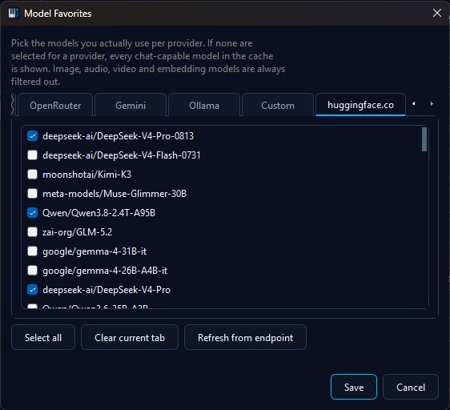
Every saved custom profile gets its own favourites tab with its own remembered model list; Refresh from endpoint fetches over the profile's URL without touching the active connection.
API keys stay in the same place as the rest of MidiPilot's settings and are never written into the preset file next to a MIDI file.
Not the same as Prompt Profiles: a provider profile decides where a request goes; a prompt profile decides what instructions a model gets. They can be used together and never overwrite each other.
Local AI with Ollama (free, private, no API key)
Ollama runs an open-weight language model entirely on your own machine - no API key, no cloud account, no per-token cost, and nothing leaves your PC. Setup is a one-time step, comparable to getting a cloud API key:
- Install Ollama. Download it from ollama.com and run the installer. After installation the Ollama server runs in the background and listens on
http://localhost:11434. - Pull a model. From a terminal, run e.g.
ollama pull llama3.1:8b. Pick a model that advertises the tools capability if you want to use Agent Mode (the agent drives MidiPilot's tools to compose/edit; a chat-only model can still answer in Simple Mode). Smaller models download faster and respond quicker; large models need a capable GPU and lots of disk. - Configure MidiPilot. In Settings → MidiPilot AI, set Provider to Ollama (local). The Base URL auto-fills to
http://localhost:11434/v1and the API key field can stay empty. Click the 🔄 Refresh button to list your installed models (with size badges), pick one, and click Test Connection.
If Test Connection reports the server can't be reached, make sure Ollama is actually running (launch the Ollama app, or run ollama serve in a terminal), then try again.
Two things worth knowing about local models
- They are given more time. A local model runs on your own GPU and a mid-sized one routinely needs minutes for a single turn - and without live streaming a local server sends nothing at all until the whole answer is finished, so from the outside the request looks idle the entire time. MidiPilot therefore allows a local provider a considerably longer request window than a cloud provider, and a slow answer is not treated as a dead connection. If a request does time out, the message says so and suggests the answer may simply need longer.
- If it writes bends instead of notes, take the option away. Small models sometimes answer “write me a melody” with a lone pitch bend, because a bend is the cheapest event to produce. Give that model a prompt profile with Hide pitch-bend events from this model ticked and the shortcut disappears - it has to write real notes.
Hugging Face via the Custom provider
The Hugging Face inference router speaks the same protocol as OpenAI, so it plugs straight into the Custom provider - no separate integration needed. This gives MidiPilot access to open-weight model families such as Llama, Qwen and DeepSeek, hosted by Hugging Face's inference partners.
- Create an access token. On huggingface.co/settings/tokens, create a token with the Inference permission (the "Make calls to Inference Providers" right is what the router checks).
- Configure MidiPilot. In Settings → MidiPilot AI, set Provider to
Custom, the Base URL to
https://router.huggingface.co/v1, and paste the token as the API key. - Refresh the model list and pick a model. Streaming works like with any other OpenAI-compatible endpoint, and models that support tool calling can be used in Agent mode.
- Save it as a provider profile if you also use another custom endpoint - Save as… in the Provider profile row keeps the router URL and token next to the local one instead of replacing it. The profile then has its own entry in the Provider dropdown, its own model list and its own favourites, so switching between the router and a local server is one click in the MidiPilot footer.
Prompt Profiles (Per-Model System Prompts)
Open Settings → MidiPilot AI → Prompt Profiles…, or Prompt Profiles… from the ⚙ gear menu in the MidiPilot footer, to manage profiles. A profile binds a custom system prompt to one or more model patterns and decides whether the profile replaces or appends to the default mode prompt.
These are the prompt profiles - the instructions a model receives. The named connections (provider, base URL, key and model) are provider profiles and are managed separately.
| Field | Description |
|---|---|
| Name | Free-text label shown in the profile list (e.g. “GPT-5.5 Decisive”, “Claude Strict JSON”). |
| Model patterns | One or more provider:model entries with optional glob suffix, e.g. openai:gpt-5.5*, openrouter:openai/gpt-5.5*, gemini:gemini-2.5-pro. The first matching profile wins. |
| System prompt | The prompt text that should be sent for matching models. Markdown is allowed. |
| Append to default | When checked, the profile is appended to the active mode prompt (Simple/Agent/FFXIV) instead of replacing it - useful for adding small, model-specific guardrails. |
| Hide pitch-bend events from this model (schema-level) | Removes the pitch-bend event type from the tool list the model sees in Agent mode. See the note below. |
Hide pitch-bend events from this model (schema-level). Of all the things MidiPilot can write into a track, a pitch bend is the cheapest to describe - a note needs a pitch, a velocity, a length and a position, a bend needs almost nothing. A model that is unsure of itself will therefore sometimes answer a “write me a melody” request with a single pitch bend and nothing else, no matter how clearly the prompt asks for notes. Tick this box and the bend simply stops being an option: it is taken out of the tool description the model receives, so it has to write real notes.
- Per profile, per model. The switch belongs to the profile, so it only affects the
provider:modelpatterns that profile is bound to. Every other model keeps the full set of event types. - Agent mode only. That is where a tool schema exists; Simple mode sends a single request without one, so the setting has nothing to act on there.
- MidiPilot only. An external client connected to the MCP server always receives the complete schema, bends included - the switch is a setting for the built-in agent, not a property of the file or of the tools themselves.
- Turn it off when you want bends. If you want that model to write real pitch bends or vibrato for you, leave the box unchecked. This is a workaround for a model that substitutes bends for notes, not a rule about how music should be written.
A local model is the most common reason to reach for it - see Local AI with Ollama.

The per-profile switch: tick it for a model that writes placeholder bends and leave every other model untouched.
MidiPilot ships with one built-in profile: GPT-5.5 Decisive, bound to openai:gpt-5.5* and openrouter:openai/gpt-5.5*. It nudges the model to commit to a tool call instead of asking clarifying questions, which is a known weak spot of that family. You can edit, duplicate, or disable it like any other profile.
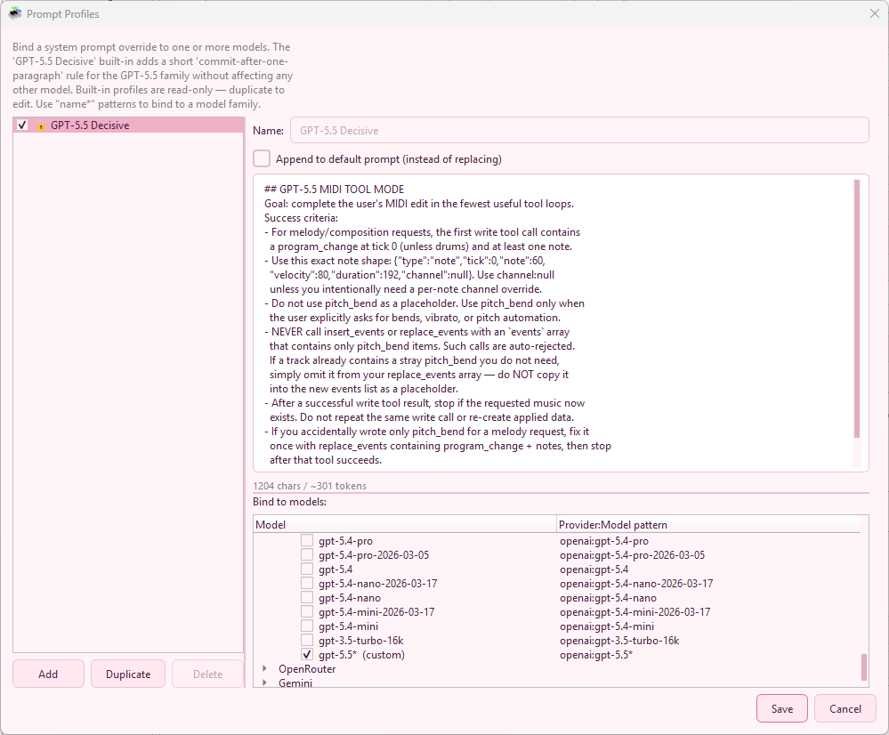
openai:gpt-5.5* and openrouter:openai/gpt-5.5*Custom System Prompts
Click Edit System Prompts… in settings to open the built-in editor. Each mode (Simple, Agent, FFXIV, FFXIV Compact) has its own tab with fully customizable instructions.
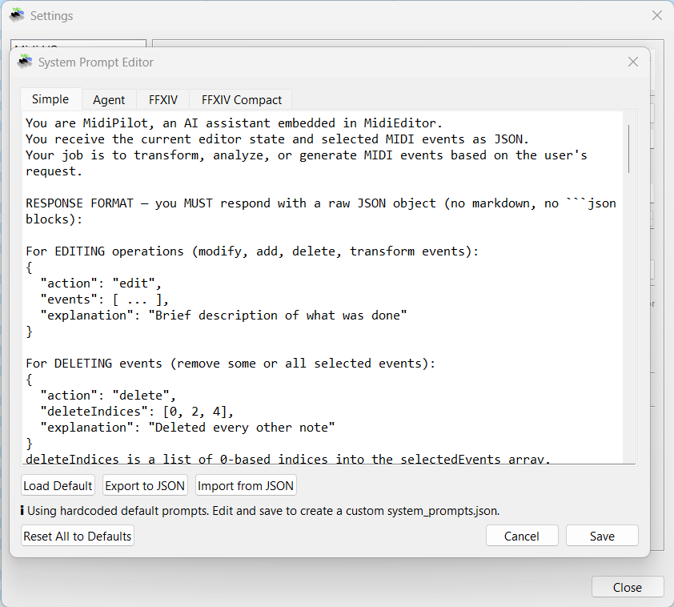
- Load Default - Reset the current tab to the built-in default prompt
- Export to JSON - Save all prompts to a file for backup or sharing
- Import from JSON - Load prompts from a previously exported file
- Reset All to Defaults - Restore all modes to factory defaults
Prompts are saved as system_prompts.json in the application directory. If no custom file exists, MidiPilot uses the hardcoded defaults.
Looking for per-model overrides? The newer Prompt Profiles dialog lets you attach a dedicated system prompt to one or more provider:model combinations - great for guiding a single “quirky” model without touching the global mode prompts.
Per-File AI Presets
Different MIDI files may need different AI settings. A 16-track orchestral arrangement needs different guidance than a 3-track FFXIV bard song. Per-file presets let you save and auto-load settings for each file.
What’s Saved
- Provider - OpenAI, OpenRouter, Gemini, Ollama (local), or Custom
- Model - e.g., gpt-5.4, gemini-2.5-flash
- Provider profile name - the name of the active provider profile, if one is in use. Only the name is stored, never a URL or an API key; a machine that has a profile of that name reconnects to the same endpoint, and every other machine uses the provider and model above.
- Mode - Simple or Agent
- FFXIV mode - On or off
- Reasoning effort - None / Low / Medium / High / Extra High / Max
- Custom instructions - Free-text notes appended to the system prompt (e.g., “This is a jazz arrangement, keep swing feel”)
How to Use
- Click the ⚙ gear button in the MidiPilot footer
- Select “Save AI preset for this file”
- The current settings are saved as a
.midipilot.jsonsidecar file next to your MIDI file - Next time you open that MIDI file, the preset is auto-loaded
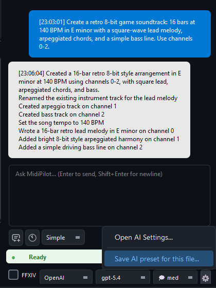
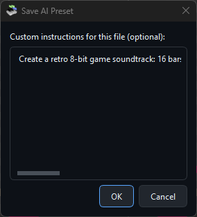
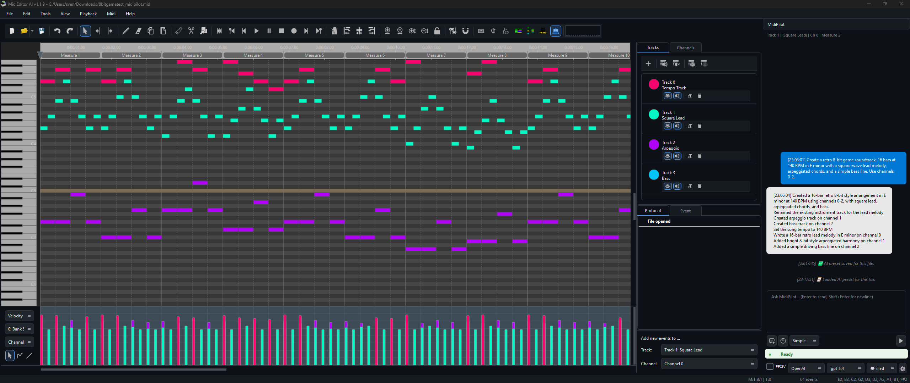
Sidecar File
Presets are stored as <filename>.midipilot.json next to the MIDI file. For example:
Sweet Child O Mine.mid
Sweet Child O Mine.mid.midipilot.json ← presetThe preset file is a simple JSON object. All fields are optional - any field not present falls back to the global default.
Auto-Save
MidiEditor AI automatically saves a backup copy of your work at regular intervals, so you never lose progress to a crash or accidental close. Your original file is never overwritten - the backup is stored as a separate .autosave sidecar file alongside your MIDI file.
How It Works
- Debounce timer - after each edit, a countdown resets. The backup is only written once you pause editing for the configured interval (default: 120 seconds).
- Named files - saved as
YourSong.mid.autosavenext to the original file. - Untitled documents - saved to
AppData/MidiEditor AI/autosave/untitled.autosave.mid. - Cleanup - the
.autosavebackup is automatically deleted when you save normally or exit cleanly. - Protocol entry - each auto-save appears as an “Auto-saved” marker in the undo history panel.
Crash Recovery
- When opening a file, if a newer
.autosavebackup exists, MidiEditor AI offers to recover it. - On startup, orphaned untitled backups from previous crashes are detected and a recovery dialog is shown.
- Recovered files open as unsaved - use Save As to give them a permanent name.
Settings
Auto-save options are in Settings → System & Performance:
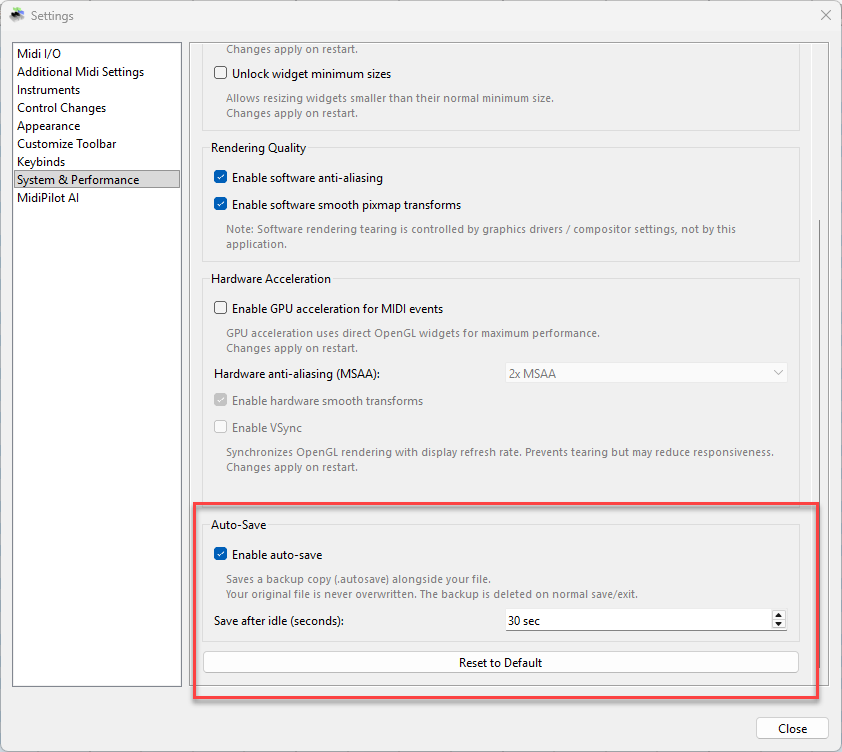
| Setting | Description |
|---|---|
| Enable auto-save | Toggle automatic backups on or off (default: on) |
| Save after idle (seconds) | Seconds of inactivity before a backup is written (30-600, default: 120) |
Token Tracking & Context Window
MidiPilot tracks token usage per API call and per session, with automatic normalization across providers (OpenAI, Anthropic, Gemini). The token counter is displayed at the bottom of the chat panel:
<last call> | <session total>🔥 / <context window> [<limit>✂]
- Last call - Prompt + completion tokens from the most recent API call
- Session total - Cumulative tokens since the chat was opened (🔥 fire icon)
- Context window - The model’s known context limit (e.g., 128k for GPT-4o, 1M for GPT-5). Turns yellow when usage exceeds 80%
- Limit - Only shown when a max token limit is enabled (✂ scissors icon)
Context Window Management
When conversations grow long, MidiPilot automatically manages context to prevent exceeding the model’s limit:
- Sliding window - When estimated token usage exceeds 70% of the context window, older messages are dropped while keeping the system prompt, first 2 messages (task context), and most recent messages
- Truncation marker - A “[Context truncated]” message is inserted where older messages were removed
- Visual warning - The token label turns yellow when approaching 80% of the context window
Multi-Provider Token Normalization
Different providers report token usage in different formats. MidiPilot normalizes all of them:
- OpenAI Chat Completions -
prompt_tokens/completion_tokens(native format) - OpenAI Responses API -
input_tokens/output_tokens→ normalized - Anthropic -
input_tokens/output_tokens→ normalized - Google Gemini -
usageMetadata.promptTokenCount/candidatesTokenCount→ normalized - Estimation fallback - When a provider returns no usage data, MidiPilot estimates ~4 characters per token
API Log
MidiPilot writes every API request and response to a log file for debugging and transparency. The log is saved as midipilot_api.log in the same directory as the MidiEditor AI executable.
| Detail | Description |
|---|---|
| Location | midipilot_api.log next to the .exe |
| Format | ISO-8601 timestamp + direction ([REQUEST] / [RESPONSE]) + JSON body |
| Cleared on | Starting a new chat or loading a different MIDI file - the previous log is overwritten |
| Manual clear | Delete the file - it will be recreated on the next API call |
If the AI produces unexpected results, open the log to inspect the raw JSON sent to and received from the provider. This is especially useful for debugging tool-call sequences in Agent mode.
See also
- MidiPilot - Your AI Copilot - the overview: key features, getting started, the chat panel, and the mode comparison table.
- MidiPilot Modes and Conversations - what the mode, streaming, and reasoning settings on this page actually switch between.
- MidiPilot in FFXIV Bard Mode - what the FFXIV Mode setting turns on.
- MidiPilot AI Tools Reference - every tool Agent mode can call, and the MCP server that exposes the same set.